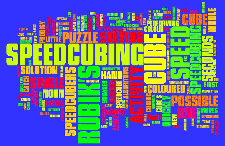

All About Me
I was born in Bakersfield, CA in August 29, 2003. Bakersfield is a city on the Kern River, north of Los Angeles.
Bakersfield has a population of approximately 464,000.
 The very subject I enjoy exceedingly much is Mathmatics.
The very subject I enjoy exceedingly much is Mathmatics.
Mathematics is the study of topics such as structure, quantity, and change.

As a hobby, I love to speedsolve cubes and puzzles. I specialize at 3x3 cubes, I average around 24 second and my goal is become sub-20.
My main cube is the Valk 3.
| World Record |
| World Record |